Asesinos
Los asesinos forman parte de uno de los dos bandos de personajes jugables de Dead by
Daylight y, en este caso, estos son los encargados de dar caza a los supervivientes con sus terroríficos
poderes. Ellos deben sacrificar al resto de jugadores antes de que escapen con vida, por eso sus
mecánicas de juego se centran en patrullar, perseguir, dañar y asesinar despiadadamente a las víctimas.
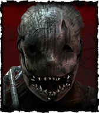
El Trampero es un asesino con fuerza y habilidades para controlar su entorno, de
las cuales puede aprovecharse para aplicar presión por el mapa gracias a sus trampas para osos.
Además, puede beneficiarse del miedo que aplica a los Supervivientes.
Dificultad: fácil.
Habilidades
Habilidad 1 - Presencia Perturbadora: Tu mera presencia infunde pavor. Los
Supervivientes que se encuentren dentro de tu radio de terror tienen un 40/50/60 % más de
probabilidades de activar pruebas de habilidad cuando reparan, curan o sabotean. El área de éxito de
dichas pruebas de habilidad se reduce un 40/50/60 %.
Habilidad 2 - Fuerza Brutal: Tu enorme fuerza te permite atravesar fácilmente las defensas de tus
presas. Destruyes generadores y palés derribados un 10/15/20 % más rápido.
Habilidad 3 - Agitación: El ansia por colgar a tu presa hace que te bulla la sangre. Aumenta tu
velocidad un 6/12/18 % mientras cargas con alguien. Mientras cargas con alguien, tu radio de terror
aumenta 12 metros.
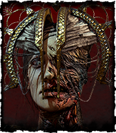
La Plaga es una asesina devota que puede infectar a los supervivientes desde
cortas distancias para herirlos. Sus habilidades se centran en obstaculizar a las presas al tiempo
que se confunden y atemorizan.
Dificultad: intermedia.
Habilidades
Habilidad 1 - Intervención corrupta: Tus plegarias invocan una fuerza oscura que
reduce las posibilidades de los supervivientes. El Ente bloquea los 3 generadores que están ubicados
más lejos de ti durante 80/100/120 segundos al principio de la partida. Los supervivientes no pueden
reparar esos generadores mientras dure el efecto. Los generadores afectados se iluminarán con un
aura blanca.
Habilidad 2 - Terror contagioso: Se te acelera el corazón al oír los gritos de los infieles.
Cualquier superviviente que esté dentro de tu radio de terror cuando dejes agonizante a alguien
gritará y te revelará su posición durante 4/5/6 segundos.
Habilidad 3 - Devoción oscura: Tu exhibición de poder genera una ola de pánico que se extiende por
todo el terreno. Te obsesionas con un superviviente. Golpear a tu obsesión con un golpe básico causa
que emita emita un radio de terror de 32 metros durante 20/25/30 segundos. Mientras dure el efecto,
tu radio de terror se reduce a 0 metros (no puedes obsesionarte con más de un superviviente).
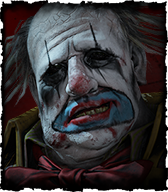
El Payaso es un asesino con dosis de estrategia que puede lanzar botellas que
liberar nubes de gas tóxico para acorralar a los supervivientes, revelar sus posiciones y
provocarles problemas de visión además de una reducción de velocidad de movimiento.
Dificultad: intermedia.
Habilidades
Habilidad 1 - Desconcierto: Tu velocidad de salto es un 5/10/15 % más rápida. Al
realizar una acción de salto, el Ente puede bloquear la localización donde se efectuó el salto
durante 8/12/16 segundos. Sólo se puede bloquear 1 localización de salto con este método al mismo
tiempo. Sólo se bloqueará para los supervivientes.
Habilidad 2 - Coulrofobia: Solo tu presencia inspira gran terror. Los supervivientes en tu radio de
terror sufren una penalización de un 30/40/50 % a la velocidad de progreso de curación.
Habilidad 3 - Pam, pam, pum: Un fuerte vínculo con el Ente desbloquea una gran fuerza. Tras colgar a
un superviviente en un gancho, el siguiente generador que rompas retrocederá un 1/2/3 de su
progresión total al instante. Después de que se aplique este daño, el retroceso en la reparación del
generador volverá a la normalidad. Estará activa durante 30 segundos después de colgar al
superviviente.
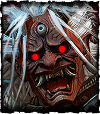
El Oni es un asesino despiadado y muy agresivo que puede absorber energía de la
sangre de sus enemigos heridos para transformarse en un demonio brutal. Gracias a esto se vuelve muy
veloz y sus golpes hacen un daño mortal.
Dificultad: difícil.
Habilidades
Habilidad 1 - Tácticas de Zanshin: Permite percibir auras. Estás alerta
mentalmente y te conoces los puntos clave del campo de batalla. Las Auras de todos los palés,
paredes rompibles y saltos se te revelan a una distancia de 24 metros. Al herir a un superviviente
se desactiva durante 40/35/30 segundos.
Habilidad 2 - Eco sangriento: La agonía se vuelve contagiosa. Al colgar a un superviviente, todos
los supervivientes heridos se ven afectados por el efecto de estado hemorragia que se curen del
todo, y por el efecto de estado agotamiento durante 45 segundos. Tiene una recarga de 80/70/60
segundos.
Habilidad 3 - Némesis: Buscas venganza contra los que te han hecho daño. Cuando un superviviente te
ciega o te aturde haciendo uso de un palé o de una taquilla, se convierte en tu obsesión. Cuando un
superviviente nuevo se convierte en la obsesión, se le aplica el efecto de estado inconsciencia
durante 40/50/60 segundos y se te revela su aura durante 4 segundos (no puedes obsesionarte con más
de un superviviente).
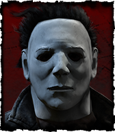
La Forma, también apodado como el "Hombre del Saco", es un asesino llamado Michael
Myers, originario de la franquicia de películas Halloween. Es capaz de monitorear a sus presas desde
la distancia para alimentar su poder. Es decir: cuanto más acecha, más fuerte y rápido se vuelve.
Además puede obsesionarse con un superviviente para desencadenar efectos mortales sobre él.
Dificultad: difícil.
Habilidades
Habilidad 1 - Lo mejor para el final: Te obsesionas con un superviviente.
Consigues un distintivo cada vez que golpeas con un ataque básico a alguien que no sea la obsesión.
Cada uno otorga una reducción acumulable del 5 % en el tiempo de recarga de ataques básicos con
éxito. Puedes ganar hasta un máximo de 8 distintivos. Golpear a tu obsesión con un ataque básico te
hará perder 4/3/2 distintivos. Si tu obsesión muere, dejarás de ganar distintivos. El asesino no
puede obsesionarse con más de un superviviente.
Habilidad 2 - Juega con la comida: Te obsesionas con un superviviente. Cada vez que persigas a tu
obsesión y la dejes escapar, recibirás una medalla, hasta un máximo de 3. Cada medalla aumenta tu
velocidad de movimiento un 1/2/3. Cada acción ofensiva consume 1 medalla. Sólo una obsesión por
partida.
Habilidad 3 - Luz que agoniza: Te obsesionas con un superviviente. La velocidad de la acción
altruista de tu obsesión aumenta un 1/2/3. Una vez que la obsesión sea asesinada o sacrificada, el
resto de supervivientes recibe una penalización de las velocidades de reparación, curación o
sabotaje del 4/5/6. Sólo una obsesión por partida.
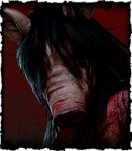
La Cerda es un personaje originario de la saga de películas Saw. Es un asesino
capaz de agacharse en modo sigiloso para emboscar a sus presas a corta distancia. Puede colocarles
trampas para osos invertidas en las cabezas que, si se activan y no son desactivadas a tiempo,
eliminan automáticamente a los supervivientes.
Dificultad: intermedia.
Habilidades
Habilidad 1 - Truco del verdugo: Tus ingeniosas modificaciones para los ganchos te
alertan cuando son manipulados. Si un Superviviente empieza a sabotear un gancho, recibes una
notificación. Mientras cargues con un superviviente, verás el aura de cualquier superviviente que
esté a menos de 2/4/6 metres del gancho.
Habilidad 2 - Supervisión: Permite percibir auras. Los generadores que estén revirtiendo se iluminan
con un aura blanca. Cuando se revierten del todo, el aura se vuelve amarilla durante 8/12/16
segundos. La distancia a la que se percibe el ruido de las reparaciones aumenta 8 metros.
Habilidad 3 - Toma una decisión: Cuando un superviviente rescata a otro de un gancho a una distancia
mínima de 32 metros de ti, Toma una decisión hace gritar al superviviente y aplica el efecto de
estado de vulnerabilidad durante 40/50/60 segundos. Tiene un tiempo de recuperación de 40/50/60
segundos.
Supervivientes
Los supervivientes forman parte de uno de los dos bandos de personajes jugables de
Dead by Daylight y, en este caso, estos son los personajes que deben cooperar juntos para poder escapar
con vida de las garras de los implacables asesinos. Su cometido consiste en reparar los generadores para
poder abrir las puertas de salida del escenario antes de que el asesino los sacrifique al Ente.
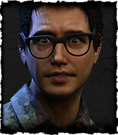
Dwight Fairfield es un líder nato, un superviviente que puede localizar a
sus aliados e incrementar su eficacia para completar objetivos trabajando juntos. Con este personaje
es más fácil mantenerse unidos todos juntos.
Dificultad: fácil.
Habilidades
Habilidad 1 - Vínculo: Desbloquea la capacidad de percibir auras. Se te
revelan las auras de los aliados en un radio de 20/28/36 metros.
Habilidad 2 - Demuestra lo que vales: Por cada otro superviviente trabajando en un generador dentro
de un rango de 4 metros, recibes una bonificación del 15 % de la velocidad de reparación. La misma
bonificación también se aplica al resto de supervivientes dentro de ese rango. Consigues un
50/75/100 % más de puntos de sangre por acciones cooperativas. Los supervivientes solo pueden
recibir un efecto de esta habilidad a la vez.
Habilidad 3 - Líder: Logras organizar un equipo para que se coordine con más eficacia. Aumenta un
15/20/25 % las velocidades de curación, sabotaje, rescate de ganchos, purificación, apertura de
puertas de salida y búsqueda en cofres de los demás supervivientes cuando se encuentran a menos de 8
metros de ti. Los supervivientes no pueden recibir el efecto de más de un líder. El efecto sigue
activo durante 15 segundos una vez fuera del alcance de la habilidad.
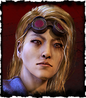
Yui Kimura es una superviviente rápida que puede actuar con velocidad cuando
hay peligros cerca. Es capaz de no dejar rastros de sangre después de recibir golpes y puede volver
a colocar palés en su posición original después de haberlos tumbado.
Dificultad: intermedia.
Habilidades
Habilidad 1 - Golpe de suerte: Te has llevado unos buenos rasguños y
moretones, pero la suerte siempre está de tu lado. Golpe de Suerte se activa en cuanto te hieren. No
dejas rastros de sangre durante 120/150/180 segundos. Queda desactivada de forma permanente para el
resto de la partida una vez trascurrido ese tiempo.
Habilidad 2 - Cueste lo que cueste: Te defiendes usando cualquier cosa que tengas a mano para sacar
ventaja. Si mantienes pulsado el botón de habilidad durante 4 segundos mientras estás junto a un
palé derribado podrás volver a dejarlo en su posición original. Tiene un tiempo de recarga de
140/130/120 segundos.
Habilidad 3 - Fuga: Cuando alguien tiene problemas, te vienes arriba y lo animas a superar cualquier
obstáculo. Cuando estás a menos de 6 metros de un superviviente con el que esté cargando el asesino,
se te aplica el efecto de estado Celeridad, que aumenta un 5/6/7 % tu velocidad de movimiento. El
superviviente forcejea un 20 % más rápido.
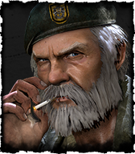
William "Bill" Overbeck es un viejo soldado con experiencia, originalmente
conocido en el videojuego de zombis Left 4 Dead, de Valve. Se trata de un personaje que juega mejor
en equipo y ayuda a sus compañeros de diversas formas, además de que es capaz de sacar ventaja en
situaciones extremas, como cuando está agonizante o es el último en quedar en pie.
Dificultad: difícil.
Habilidades
Habilidad 1 - Abandonado a tu suerte: Permite percibir auras. Si eres el
último superviviente con vida en la partida, podrás ver el aura de la trampilla a una distancia de
24/28/32 metros.
Habilidad 2 - Tiempo prestado: Te invade una energía inesperada cuando rescatas a un aliado de un
gancho dentro del radio de terror del asesino. Durante los siguientes 15 segundos al rescate de un
superviviente, se le aplicará el efecto de estado Resistencia. Cualquier golpe que reciba durante
ese tiempo le causará el efecto de estado Herida profunda en lugar de dejarlo agonizante. El
superviviente dispondrá de 10/15/20 segundos para sanarse. Si sufre algún daño mientras tanto o si
el temporizador de Herida profunda llega a cero, se quedará en estado agonizante.
Habilidad 3 - Inquebrantable: Tu experiencia en combate te ha enseñado alguna cosa que otra sobre
supervivencia. Podrás recuperarte por completo del estado agonizante una vez por partida. Aumenta en
un 15/20/25 % la velocidad de recuperación cuando estás agonizante.
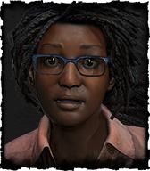
Claudette Morel es una botánica que puede aumentar su capacidad para
sobrevivir y también la de sus compañeros de equipo gracias a sus habilidades relacionadas con
plantas curativas y la creación de bálsamos que detienen hemorragias.
Dificultad: fácil.
Habilidades
Habilidad 1 - Empatía: Permite percibir auras. Las auras de aliados
Agonizantes o Heridos se te revelan en un radio 64/96/128 metros. Empatía no revela las auras de
aliados cuando están en contacto directo con el asesino.
Habilidad 2 - Conocimiento de botánica: Usas algunas plantas halladas en La Hoguera para elaborar
tinturas que inhiben el sangrado. La velocidad de curación y la eficiencia de los objetos curativos
aumentan en un 11/22/33 %.
Habilidad 3 - Autocuración: Permite curarte sin objetos curativos a un 50 % de la velocidad normal.
Aumenta la eficiencia de los objetos curativos un 10/15/20 %.
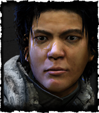
Jake Park es un superviviente solitario capaz de sobrevivir incluso de forma
individual. Es uno con la naturaleza e improvisa sobre la marcha. Puede mantener la calma en
situaciones tremendamente aterradoras y aguantar el dolor de posibles heridas.
Dificultad: intermedia.
Habilidades
Habilidad 1 - Voluntad de hierro: Puedes concentrarte y entrar en un estado
semimeditativo para atenuar el dolor. Los gruñidos provocados por heridas se reducen un 50/75/100 %.
Habilidad 2 - Espíritu calmado: Parece que los animales confían en ti, ya que mantienen la calma en
tu presencia. Reduce un 80/90/100 % la probabilidad de alertar a criaturas del bosque. Te permite
controlar el impulso de gritar.
Habilidad 3 - Sabotear: Permite percibir auras. Puedes ver las auras de los ganchos en un radio de
56 metros desde el punto de recogida si el asesino carga con un superviviente. Permite sabotear
ganchos sin necesidad de tener una caja de herramientas. Sabotear un gancho sin caja de herramientas
lleva 2,5 segundos. Sabotaje tiene un tiempo de recarga de 10/20/30 segundos.
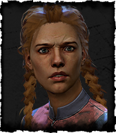
Meg Thomas es una superviviente atlética que puede moverse más deprisa que
la gran mayoría de los asesinos, por lo que es ideal para tener una muy buena movilidad y escapar de
casi cualquier persecución o problema rápidamente.
Dificultad: fácil.
Habilidades
Habilidad 1 - Velocidad silenciosa: No haces tanto ruido como los demás
cuando saltas sobre obstáculos o te ocultas en las taquillas a toda velocidad. El alcance de sonido
y la detección del ruido para las acciones de salto y escondite se reducen en un 100 %. Este efecto
solo se puede activar una vez cada 30/25/20 segundos.
Habilidad 2 - Esprint: Cuando te pones a correr, aceleras a un 150 % de tu velocidad normal de
carrera durante un máximo de 3 segundos. Causa el efecto de estado Agotamiento durante 60/50/40
segundos. No puedes usar Esprint mientras sufres Agotamiento. No te recuperas del efecto de estado
Agotamiento mientras corres.
Habilidad 3 - Adrenalina: Cuando estás a punto de escapar, te invade una energía inesperada. Te
curas instantáneamente un estado de salud y corres a un 150 % de tu velocidad normal de carrera
durante 5 segundos en cuanto las puertas de salida se activan. Si estás incapacitado en el momento
que debería actuar, Adrenalina no surte efecto hasta que te liberas. Adrenalina te despierta si se
activa mientras estás dormido. Adrenalina permite ignorar el efecto de estado Agotamiento. Causa el
efecto de estado Agotamiento durante 60/50/40 segundos. No te recuperas del efecto de estado
Agotamiento mientras corres.